FashionAI · anatomia do card · v19 · 27/09/2026
Card da peça em camadas, detalhe e arte do card (RF11)
A v19 substitui a seção C (anatomias da peça) da v18, que fica como histórico. Looks e DNA continuam na v18.
Captura real são imagens do app rodando (Next.js), geradas por scripts/e2e/verify-card-art.mjs, verify-cards.mjs, verify-interactions.mjs e verify-select.mjs com a API simulada e fotos saídas do pipeline de imagem de verdade.
Diagrama são ilustrações feitas neste documento para explicar a estrutura. Não são capturas do produto.
As capturas anexadas ao pedido não estavam disponíveis nesta sessão. As referências de rede social abaixo seguem padrões públicos e conhecidos; nenhuma tela do Instagram foi aberta ou analisada.
- Camadas, empilhamento e recorte
- Dimensões, tokens e zona segura
- Compacto e ampliado, desktop e celular
- Detalhe: dono × visitante
- Famílias de arte e variações
- Efeitos, limites e movimento
- Editor RF11: controle → camada
- Fotografia de produto e aprovação
- Contrato visual compartilhado
- Estados
- Linha de interações (RF19)
- Listas de escolha (Select)
1. Camadas, empilhamento e recorte
Diagrama ênfase na base
5 · aura atrás do container e luz de contorno na borda dele
- 1 · Superfície externa —
article.pc: borda (cor da skin), raio eoverflow:hiddenque recorta tudo o que é decorativo. - 2 · Área artística —
.pc-art(z-index 0): fundo do Background Studio (ou o fundo padrão da família), a composição da família e os efeitos de fundo.aria-hidden,pointer-events:none,contain:paint. - 3 · Container de conteúdo —
.pc-frame > .pc-content(z-index 1): cabeçalho, área da peça, ações e identificação. Fundo próprio (--container-bgou o da skin), sólido ou vidro fosco;overflow:clip. - 4 · Área da peça —
.pc-media: a foto aprovada em 4:5 com fundo próprio (--pc-media-bg). Nada da arte passa por cima dela. - 5 · Efeitos decorativos — aura (dentro da área artística, atrás do container), luz de contorno e relevo (sombras do container). Nenhum recebe clique ou foco.
Os cinco fundos, sem confusão
| Fundo | Onde no código | Quem controla |
|---|---|---|
| Fundo do app | body · --ground | Tema (claro, escuro, contraste) |
| Arte do card | .pc-art · ArtStage (components/piece-art.tsx) | Editor RF11: template, composição, fundo artístico, efeitos |
| Superfície interna | .pc-content · --container-bg, data-surface | Editor RF11: skin, cor do container, sólido/vidro |
| Fundo da área da peça | .pc-media · --pc-media-bg + o fundo da própria foto de estúdio | Fundo do estúdio (cadastro ou Editar imagem), com aprovação |
| Borda e efeitos externos | article.pc border, --pc-sh-rim, --pc-sh-relief, .pc-fx-aura | Skin (borda) e efeitos do editor |
Decorativo × interativo
| Elemento | Clique | Foco / leitor de tela |
|---|---|---|
| Toda a área artística, composição, partículas, colagem, aura | Não (pointer-events:none) | Não (aria-hidden) |
| Foto da peça | Abre o detalhe | Fora da ordem de Tab (o nome é o link): um destino, um link |
| Nome da peça, @usuário | Detalhe / perfil | Sim |
| Curtir, comentar, compartilhar, salvar | Sim | Sim, com contagem no nome acessível e aria-pressed |
Verificado: o clique no meio da faixa lateral cai no .pc-frame (não interativo), nunca num filho da arte; a arte tem zero elementos focáveis.
2. Dimensões, tokens e zona segura
| Token | Compacto (feed, grades) | Ampliado (detalhe) |
|---|---|---|
--pc-x (laterais) | clamp(12px, 6cqi, 20px) | clamp(20px, 3cqi, 32px) |
--pc-top / --pc-bottom | --pc-x × k. A soma é sempre 2,9 × --pc-x: equilibrada 1,45/1,45 · ênfase no topo 1,9/1,0 · ênfase na base 1,0/1,9 | |
| Raio | --pc-r-out = raio da skin (padrão 10 px); --pc-r-in = 70% dele (mín. 4 px) | mín. 12 px |
| Área da peça | 4:5, largura do container. Zona segura: todo o container; a arte só ocupa as quatro faixas entre a borda externa e o container. | |
Medido na verificação (cqi resolve no próprio card): grade no desktop (card ≈ 220 px) — laterais 13,06 px, topo + base 38 px; grade no celular (card ≈ 165 px) — 12 px e 35 px; detalhe no desktop — 31,14 px e 45,15 + 45,15 px; detalhe no celular — 20 px e 29 + 29 px.
Consequências: as laterais têm a mesma largura em todas as famílias, então a foto tem a mesma escala em qualquer arte (variação medida: 0 px em 10 cards e em 12 famílias/variações); como a soma topo + base é constante, cards da mesma linha têm a mesma altura (variação 0 px).
3. Compacto e ampliado, desktop e celular
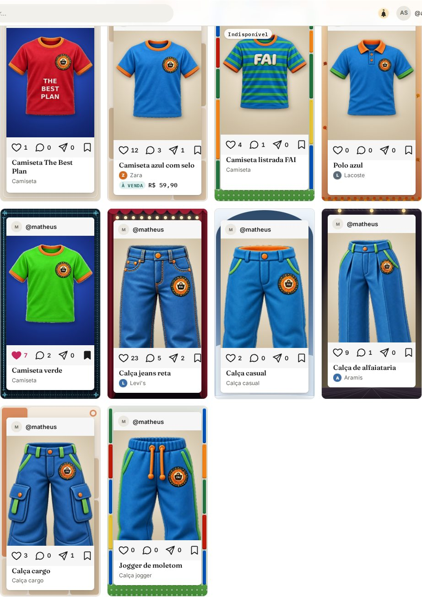
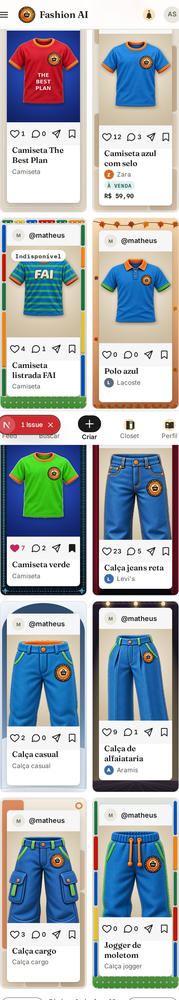
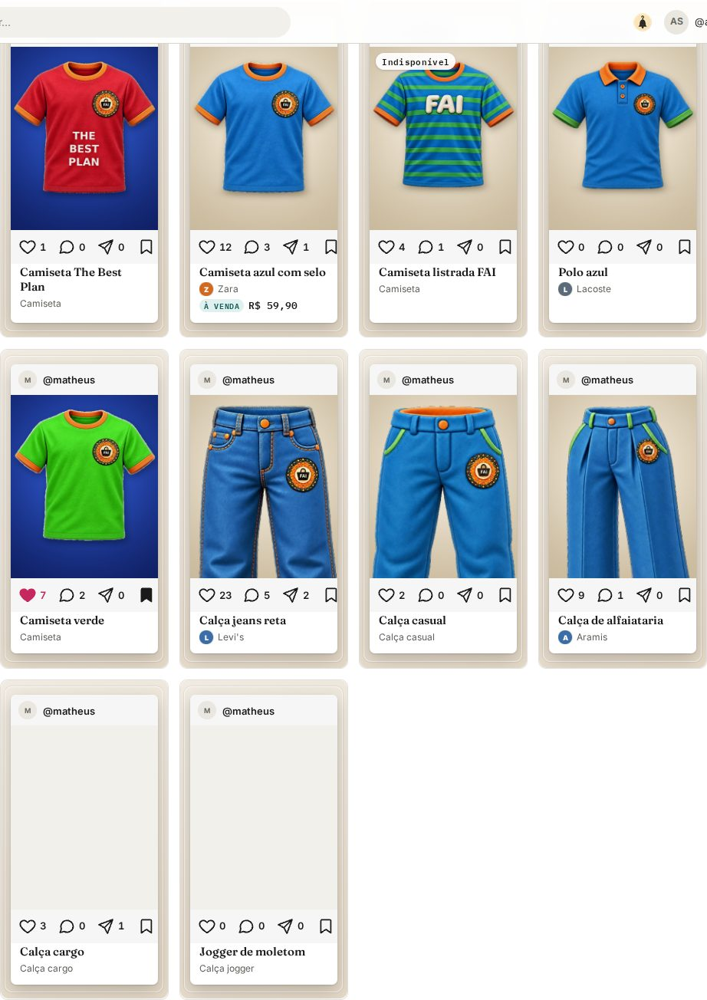
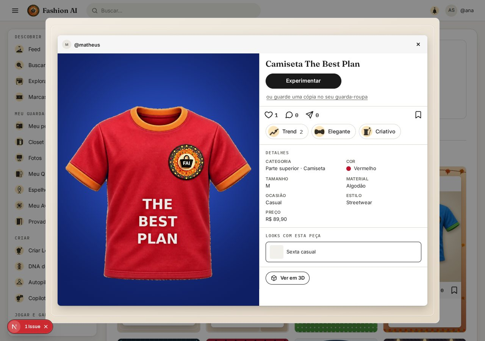
4. Detalhe: dono × visitante
Ordem: imagem inteira (toque amplia) → nome e marca (preço só à venda) → uma ação principal com a alternativa como texto-link → uma linha só de interações (curtir, comentar, compartilhar, remixar | Trend, Elegante, Criativo; salvar à direita — seção 11) → detalhes agrupados → looks com a peça (só se existirem) → opções.
| Dono | Visitante | |
|---|---|---|
| Ação principal | Adicionar ao look | Experimentar (manequim 3D) |
| Alternativa (secundária) | ou experimente no manequim 3D | ou guarde uma cópia no seu guarda-roupa |
| Mais opções | Editar dados · Editar imagem · Editar arte do card · Trocar foto · Disponível/indisponível · Favorita · Foto com meu manequim · Mostrar no quarto · Excluir | Não aparece (não há opção para visitante) |
| Técnico | Detalhes técnicos (motor, etapas, 3D) recolhidos | — |
Teclado: ao abrir, o foco vai ao diálogo (o leitor anuncia “detalhe da peça”); Tab e Shift+Tab não saem dele (0 saídas em 40 + 10 toques); Esc fecha o menu aberto sem fechar o modal e, sem menu, fecha o modal; o foco volta ao nome da peça no card. Abrir o detalhe não dispara curtida nem salvamento (0 pedidos).
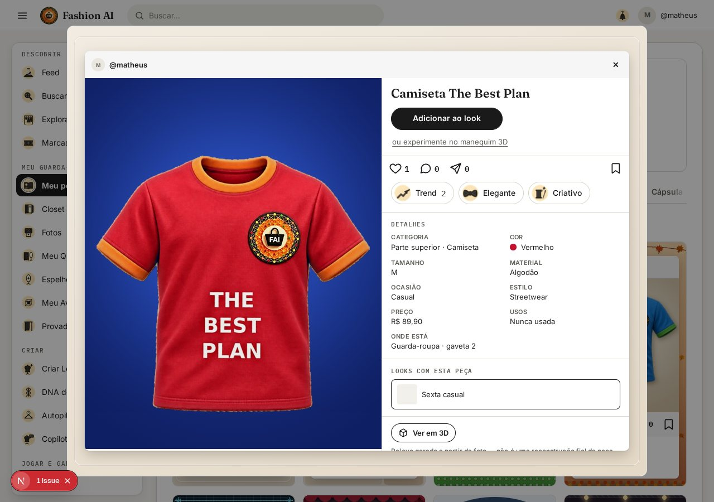
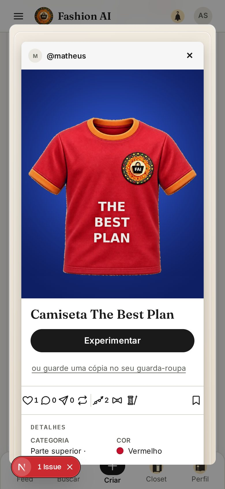
5. Famílias de arte e variações
| Família | Variação A | Variação B | Ênfase padrão |
|---|---|---|---|
| Clássica | passe-partout de linha fina | cantoneiras de galeria | equilibrada |
| Bento | mosaico de painéis, destaque no topo | coluna larga à esquerda + disco | topo |
| Blocos (genérico, sem marca) | moldura de tijolos + placa-base | torres laterais + placa-base | base |
| Sazonal (4 estações) | guirlanda, peças nas laterais e chão | janela em arco com paisagem | topo |
| Raio-X | planta técnica: grade, contornos, cotas, registro | planos translúcidos + varredura | equilibrada |
| Passarela | treliça de luz, fachos e piso em perspectiva | cortinas, bambinela e letreiro de lâmpadas | A: base · B: topo |
A composição é desenhada só nas faixas (os painéis do Bento, por exemplo, cobrem o card inteiro por baixo do container; as bordas e os vãos aparecem nas quatro faixas). Nenhuma família corta, cobre ou altera a foto. A família define também a zona do selo (anatomia sincronizada: Bento → BENTO, Blocos → LEGO, Raio-X → RAIO_X, Passarela → PASSARELA; as demais → PECA_AMPLIADO).
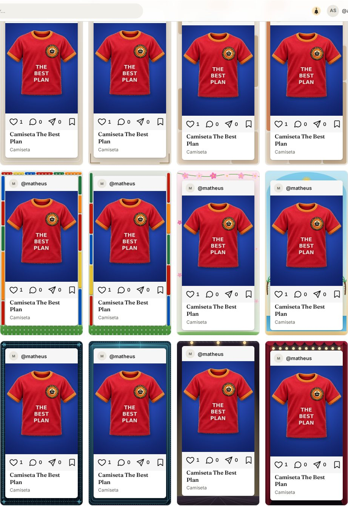
6. Efeitos, limites e movimento
| Efeito | Camada | Famílias |
|---|---|---|
| Aura (intensidade ≤ 0,8 e alcance) | 2, atrás do container | Clássica, Bento, Sazonal, Passarela |
| Luz de contorno | 5, borda do container | Clássica, Bento, Blocos, Raio-X, Passarela |
| Brilho localizado | 2 | todas |
| Painel de vidro | 2, moldura translúcida | Clássica, Bento, Raio-X |
| Metálico / iridescente | 2 | Clássica, Raio-X, Passarela |
| Relevo da moldura | 1 e 5 | Clássica, Blocos |
| Textura papel / tecido / cerâmica | 2 | Clássica, Bento, Blocos, Sazonal |
| Colagem | 2 | Bento, Sazonal |
| Partículas (+ movimento opcional) | 2, só nas faixas | Clássica, Blocos, Sazonal, Raio-X, Passarela |
Limites: no máximo 3 efeitos ao mesmo tempo (a aura e o movimento não contam); nenhum ligado por padrão; o que não combina com a família fica desabilitado no editor e é ignorado na renderização. Vidro fosco da superfície: sem desfoque no card compacto (feed leve), com desfoque no ampliado.
Movimento: só no card ampliado e só com a opção ligada. Verificado: 0 animações na arte do feed; no detalhe, 20 animações rodando, pausadas quando o card sai da tela (data-inview="false", IntersectionObserver) e 0 com “reduzir movimento” (do sistema ou do app). Deslocamento de layout (CLS) da grade: 0.
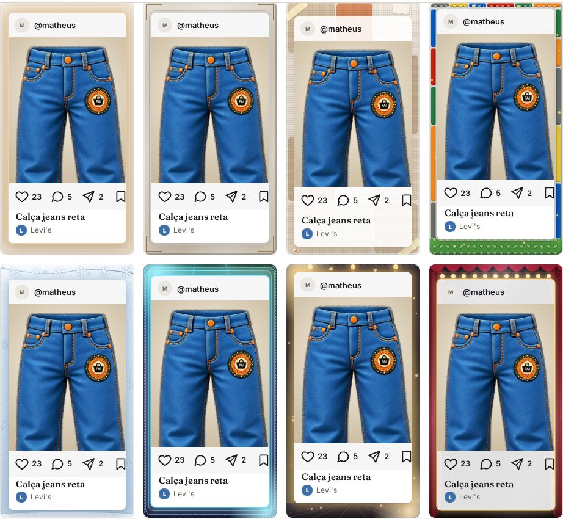
7. Editor RF11: controle → camada
Fluxo: Template → Composição → Fundo artístico → Superfície interna → Efeitos → Prévia e aplicação. A prévia é o próprio PieceCard do feed, na largura de uma coluna da grade (sem o lugar reservado do selo, para ficar idêntica). Existe no cadastro (etapa “Arte de fundo”) e no detalhe, para o dono (Mais opções › Editar arte do card).
| Controle | Camada | Campo gravado |
|---|---|---|
| Família e variação (+ estação) | 2 | template.family / variant / season (+ anatomy do selo) |
| Equilibrada / topo / base | 2 (tamanho das faixas) | composition.emphasis |
| Cor, gradiente, cartela sazonal, AURA, material, arte com IA, upload (Background Studio reaproveitado) | 2 (fundo atrás da composição) | color, gradient, aura, materialId, aiArt, uploadUrl… |
| Skin | 1 (borda) e 3 (tinta, tipografia) | skin |
| Cor do container, sólido/vidro | 3 | surface.color / style (+ container.color para leitores da v1) |
| Fundo do estúdio (no cadastro) | 4 | foto de estúdio do rascunho |
| Efeitos | 2 e 5 | effects |
Persistência: PUT /api/pieces/{id}/background (só o dono). O editor trabalha num rascunho: Cancelar fecha sem gravar (0 pedidos); Restaurar padrão volta à Clássica sem arte só no rascunho; Aplicar grava com a revisão lida (baseRev) — se outra janela aplicou antes, o servidor responde 409 e o editor avisa em vez de sobrescrever. Configs antigos (v1) são lidos como v2 sem regravar: a anatomia vira a família equivalente e a cor do container vira a superfície.
Verificado: prévia e card salvo com a mesma largura, altura, faixas e posição de todos os elementos internos; reaberto depois de recarregar, o editor volta com Bento B marcado.
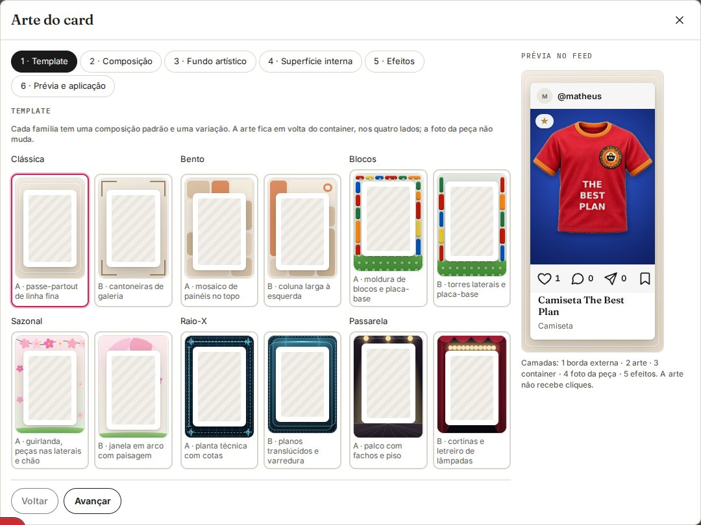
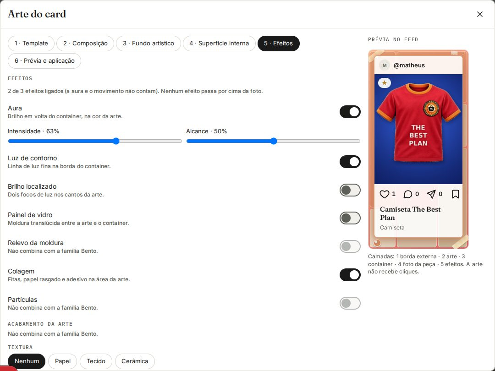
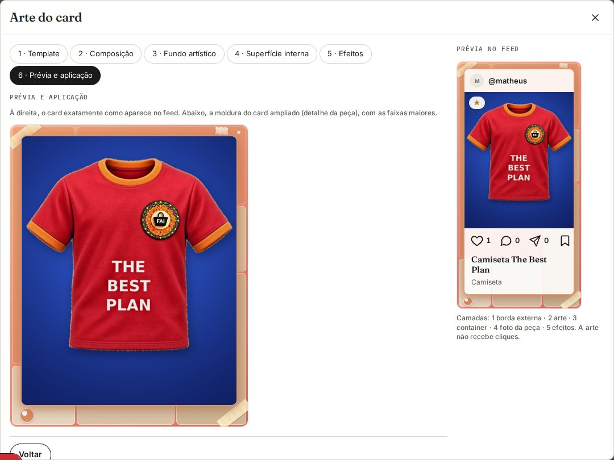
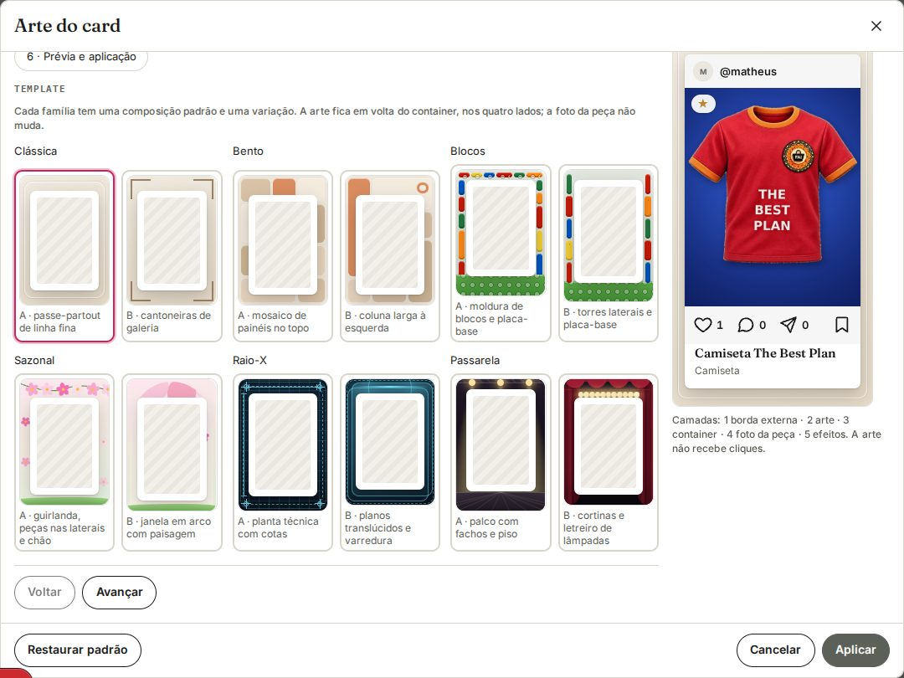
8. Fotografia de produto e aprovação
Pipeline: upload → validação (critérios da foto) → identificação (tipo escolhido antes, subtipo, marca) → remoção de pessoa e cenário (no navegador, só a peça do tipo escolhido segue) → revisão do recorte → enquadramento pelo template da categoria (camisetas, jaquetas, calças, shorts, saias, vestidos, calçados, bolsas, acessórios) → variantes (foto inteira, miniatura, feed 4:5, detalhe do logo só com logo real, recorte realçado) → aprovação.
A foto aprovada nunca é trocada em silêncio: um processamento novo sobre ela vira uma versão pendente (com todos os derivados e os marcos do enquadramento para ajuste manual). O dono compara aprovada × nova em Editar imagem e aprova ou descarta; visitantes não recebem a versão pendente na API.
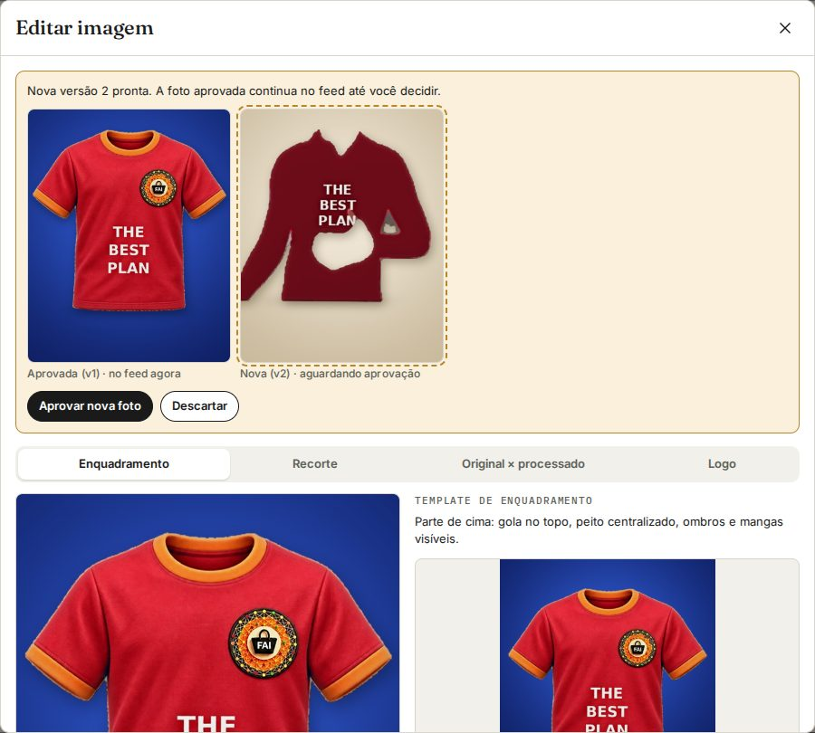
9. Contrato visual compartilhado
| Parte | Componente | Regra |
|---|---|---|
| Cabeçalho | CardHeader | avatar 24 px, @usuário (marca: nome), linha secundária opcional; peça, look e DNA |
| Imagem | .pc-media | 4:5, foto aprovada, fundo próprio |
| Ações | CardActions + SocialIcon | ícones de traço 24 px (20 px na coluna estreita), contagem ao lado em Inter 14/13 px; salvar à direita; estado por forma (contorno → preenchido); no detalhe, tudo numa linha só (seção 11) |
| Reações | CardActions (.is-rx) | na mesma linha das ações, depois de um separador fino; ícones de traço 24 px no mesmo preto e branco de curtir e comentar (Trend = onda que sobe com dois nós vazados e seta aberta; Elegante = gravata-borboleta; Criativo = carretel com agulha); contagem ao lado só quando > 0; ativo = ícone preenchido; nome e contagem no nome acessível |
| Identificação | .pc-id | nome (serifada, 2 linhas), marca ou tipo, preço só à venda |
A liberdade do RF11 fica nas camadas 1, 2 e 5 (e na cor da 3); o contrato acima não muda com a arte.
Padrões de rede social usados como referência
| Padrão (conhecido publicamente) | No FashionAI |
|---|---|
| Cabeçalho curto com avatar e nome de usuário | CardHeader |
| Mídia dominante com proporção fixa no feed | foto 4:5 do template da categoria |
| Linha única de ações com ícones de traço; salvar isolado à direita | CardActions |
| Contagem junto do ícone, sem linha “N curtidas” separada | contagem inline, número também no nome acessível |
| Reações como ícones na mesma linha das ações (sem pílula nem texto), contagem ao lado | Trend, Elegante, Criativo |
| Lista de escolha em cartão flutuante, opção marcada com ✓ | Select (seção 12) |
| Detalhe com ação principal única | Adicionar ao look / Experimentar + alternativa em texto |
10. Estados
Capturas do verify-cards.mjs na versão em camadas: 3D processando (barra indeterminada; porcentagem só com progresso real do provedor), 3D com falha (mensagem + “Tentar de novo”, só dono), sem 3D (nada aparece — não há mais botão para gerar), sem logo, sem looks e foto vestida com parte encoberta (pede revisão).
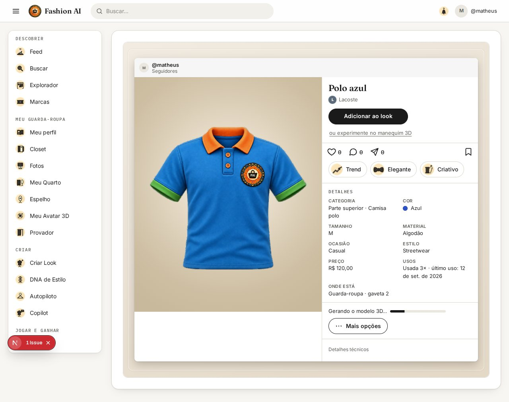
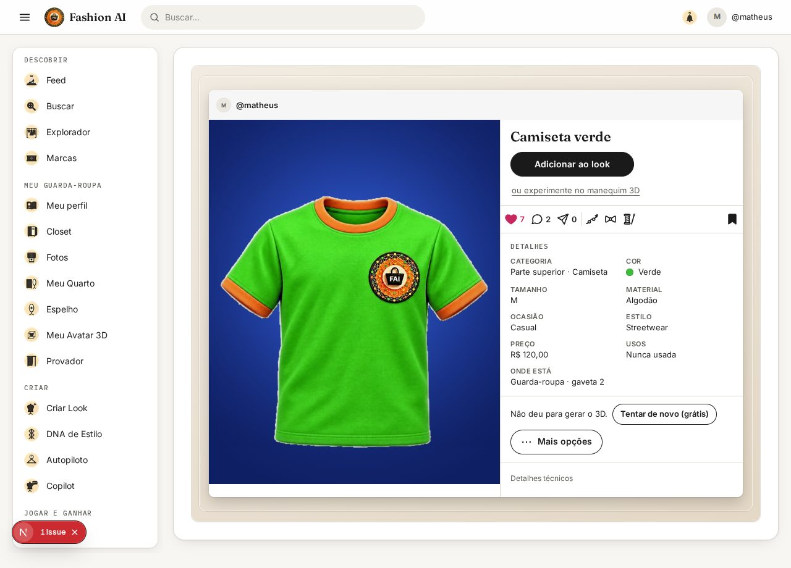
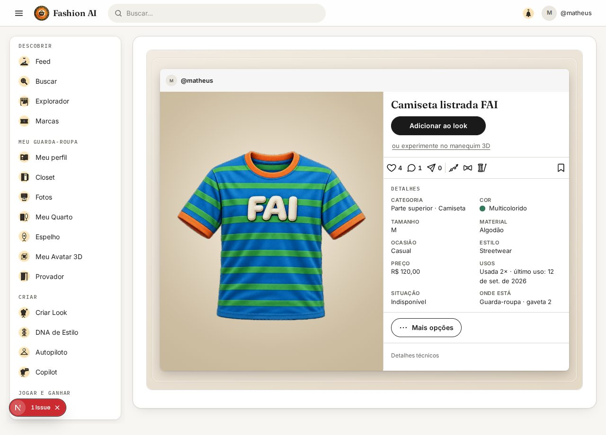
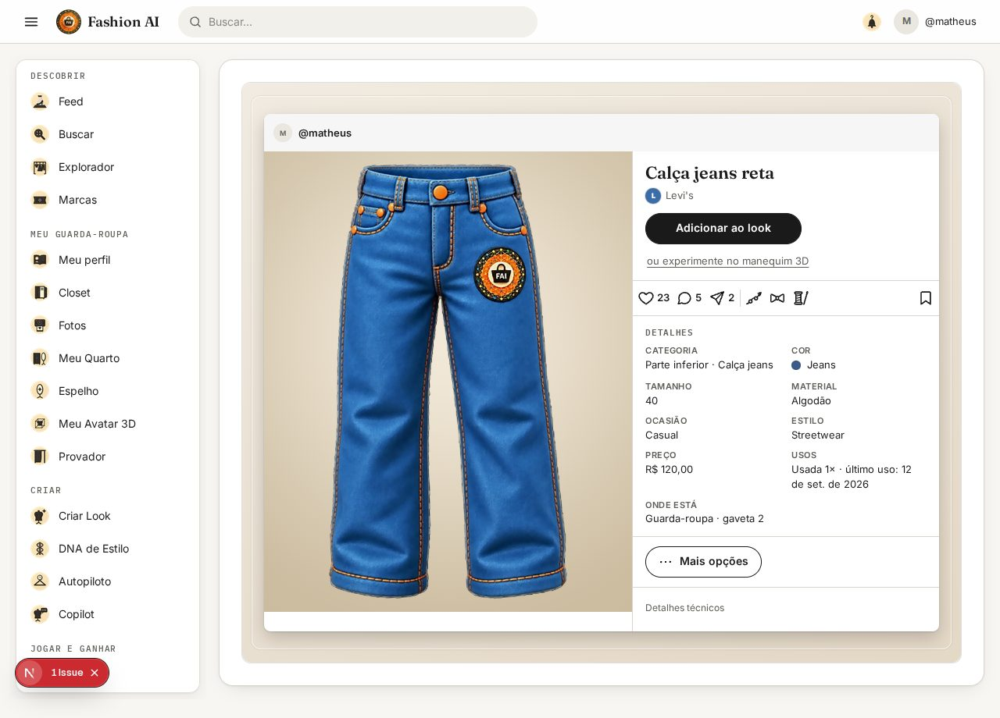
11. Linha de interações (RF19)
Medições de scripts/e2e/verify-interactions.mjs. No detalhe, as interações ficam numa linha horizontal só: curtir, comentar, compartilhar e remixar (visitante) com a
contagem ao lado, um separador fino, Trend, Elegante e Criativo, e salvar isolado à direita. Tudo no mesmo desenho de
traço preto e branco (traço 1,8; ativo = preenchido): 24 px, 22 px quando a linha tem até 480 px (detalhe no desktop,
443 px medidos) e 20 px até 360 px (celular). Remixar e as reações sem nenhuma contagem mostram só o ícone. O número vai
em Inter (14/13/12 px, não na fonte mono de .tabular); até 420 px de linha a contagem usa a forma curta
(“12 mil”). Medido com 128 curtidas, 14 comentários, 6 compartilhamentos, 3 remixes e 42/17/5 reações: 8 botões no
mesmo eixo em 1280 e 390 px, sem rolagem; em 320 px (linha de 246 px) as interações rolam na horizontal e salvar
continua fixo e visível. No card compacto a linha é curtir, comentar, compartilhar e salvar.
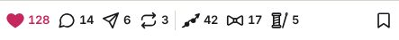
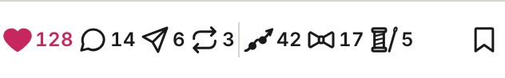
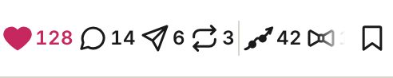
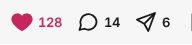
12. Listas de escolha (Select)
Medições de scripts/e2e/verify-select.mjs. Nenhuma lista de escolha única usa mais o <select> nativo (que abria com a aparência do sistema). O
Select do FashionAI tem a mesma API (<option> como filhos; e.target.value é
o ID canônico, o rótulo traduzido é só texto) e vale para todos os 65 usos: Hype Score · Painel, etapa Dados do
cadastro de peça, Editar dados, filtros e ordenação, cadastro de conta, configurações e o restante.
| Parte | Regra |
|---|---|
| Gatilho | aparência do campo (.input: 40 px, 44 px no toque, raio 6, borda --line-soft); aberto = borda --ink + anel de foco e seta girada; “—” e “Todos” em --muted; w-auto = largura da opção mais longa |
| Lista | cartão flutuante (raio 14, sombra, borda --line-soft), opções de 40 px (44 no toque) com raio 10; ativa = --surface-2; escolhida = negrito + ✓; desabilitada = 45%; até 320 px de altura com rolagem própria |
| Posição | por portal, acima de modais e cartões (não é cortada); abre para cima quando falta espaço embaixo; nunca sai da tela |
| Teclado e leitor | combobox só-de-escolha (WAI-ARIA APG): foco fica no gatilho, opção ativa em aria-activedescendant; setas, Home/End, PageUp/PageDown, digitar o começo do nome, Enter/Espaço escolhem; Esc fecha só a lista (não fecha o modal); Tab fecha; clique fora fecha sem mudar |
| Estados | carregando (spinner no lugar da seta), desabilitado, erro (aria-invalid, borda crítica); tema claro, escuro e alto contraste por tokens |
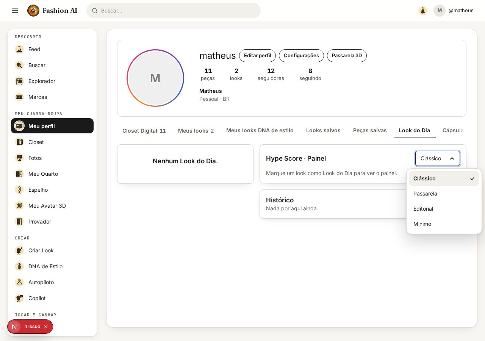
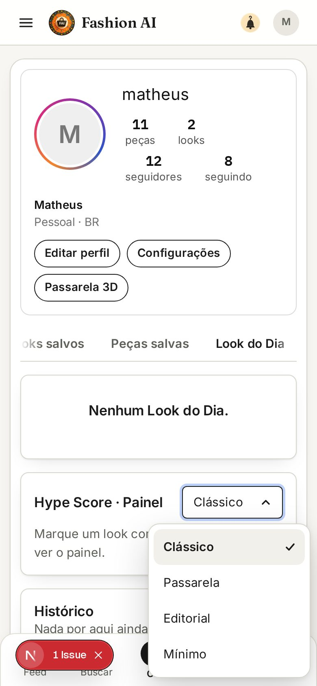
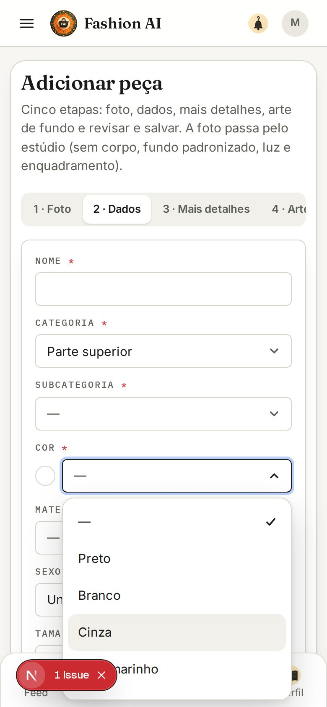
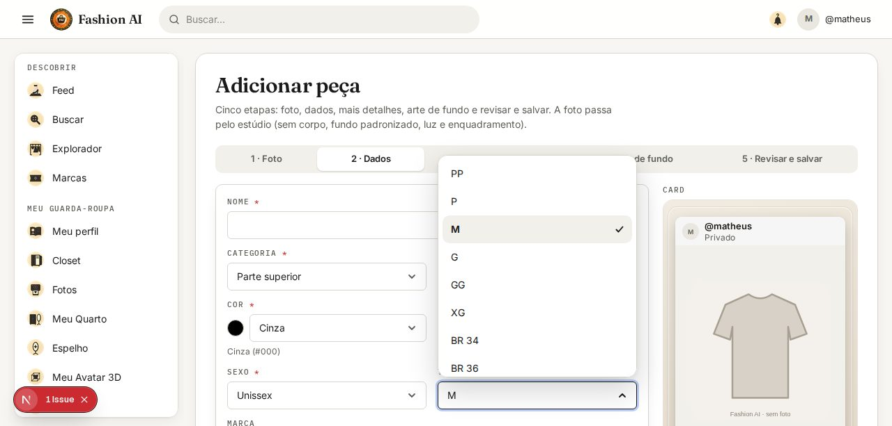
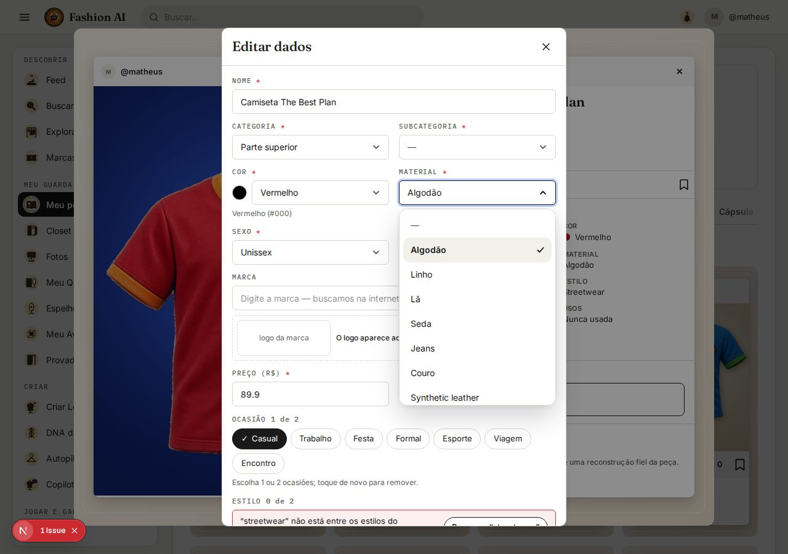
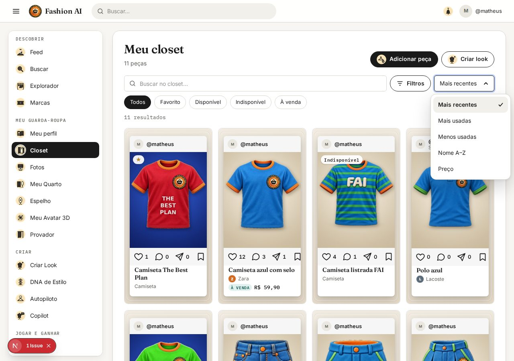